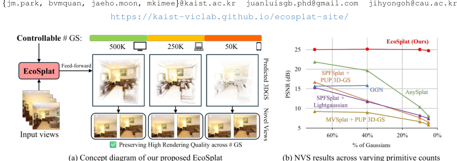
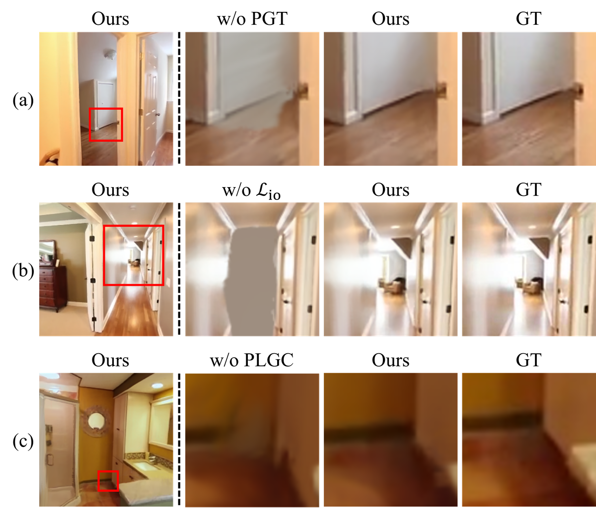
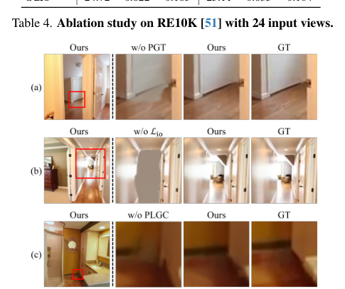
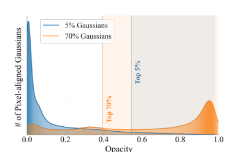

EcoSplat
简单摘要
前馈 3D 高斯分布 (3DGS) 可实现高效的一次性场景重建，为新颖的视图合成提供 3D 表示，而无需针对每个场景进行优化。然而，现有方法通常预测每个视图的像素对齐图元，在密集视图设置中产生过多的图元，并且不提供对预测高斯数量的明确控制。为了解决这个问题，我们提出了 EcoSplat，这是第一个效率可控的前馈 3DGS 框架，它可以在推理时自适应地预测任何给定目标基元计数的 3D 表示。 EcoSplat 采用两阶段优化流程。
第一阶段是像素对齐高斯训练（PGT），我们的模型学习初始原始预测。第二阶段是重要性感知高斯微调（IGF）阶段，我们的模型学习对基元进行排序并根据目标基元计数自适应调整其参数。跨多个密集视图设置的大量实验表明，EcoSplat 非常强大，并且在严格的图元计数约束下优于最先进的方法，使其非常适合灵活的下游渲染任务。


简而言之，这篇论文关注的核心是：前馈 3D 高斯分布 (3DGS) 可实现高效的一次性场景重建，为新颖的视图合成提供 3D 表示，而无需针对每个场景进行优化。然而，现有方法通常预测每个视图的像素对齐图元，在密集视图设置中产生过多的图元，并且不提供对预测高斯数量的明确控制。为了解决这个问题，我们提出了 EcoSplat，这是第一个…
新视图合成 (NVS) 是 3D 视觉中的一项基本任务，支持虚拟现实 (VR)、增强现实 (AR) 和电影制作中的应用。神经隐式表示已经显示出令人印象深刻的进步，但它们的训练和渲染在计算上仍然昂贵。最近，3D 高斯分布 (3DGS) 已成为一种最先进的方法，可同时提高渲染质量和实时渲染速度。尽管 3DGS 能够实现实时渲染和快速重建，但它仍然需要大量的训练时间，通常每个场景需要几分钟甚至几小时进行重建，因为它依赖于每个场景的优化。
为了解决这一限制，人们提出了几种基于前馈的方法，利用大规模数据集直接从多视图图像预测 3D 高斯（基元）的属性。一般来说，这些方法将每个输入图像的 2D 像素反投影到相应的 3D 图元（即像素对齐的高斯），并聚合来自所有输入视图的结果图元以表示相应的场景。在前馈重建阶段之后，预测的 3D 高斯图元可以被存储并重新用于在终端用户设备（例如手机或 AR/VR 耳机）上进行实时渲染。在实际应用中，重建通常在服务器端设备上执行一次，而生成的 3DGS 必须支持跨不同最终用户设备的多个渲染请求。
然而，现有的前馈方法通常会生成大量像素对齐的图元，特别是对于密集视图重建，这对于资源受限的设备来说可能不切实际。为了缓解这种情况，有几种方法尝试通过体素化、基于图形的聚合或基于不透明度的修剪来减少多个视图中的冗余高斯。尽管如此，这些方法缺乏对原语目标数量的明确控制，因为它们不是专门为对该数量进行精细控制而设计的，而精细控制是实时和流式应用程序中灵活部署的关键因素。他们基于阈值的修剪策略（例如，体素大小或基于不透明度的修剪）通常会产生依赖于场景且不稳定的原始计数，导致质量效率权衡不佳。
在实践中，对 3D 高斯基元数量的显式控制至关重要：如果没有强制执行规定计数的机制，基元的最终数量会因场景和视图计数而异，从而导致不可预测的延迟、内存和带宽……
核心创新
综合引言与方法部分，这篇论文的核心创新可以概括为以下几方面：
1）问题定义与研究动机
新视图合成 (NVS) 是 3D 视觉中的一项基本任务，支持虚拟现实 (VR)、增强现实 (AR) 和电影制作中的应用。神经隐式表示已经显示出令人印象深刻的进步，但它们的训练和渲染在计算上仍然昂贵。最近，3D 高斯分布 (3DGS) 已成为一种最先进的方法，可同时提高渲染质量和实时渲染速度。尽管 3DGS 能够实现实时渲染和快速重建，但它仍然需要大量的训练时间，通常每个场景需要几分钟甚至几小时进行重建，因为它依赖于每个场景的优化。为了解决这一限制，人们提出了几种基于前馈的方法，利用大规模数据集直接从多视图图像预测 3D 高斯（基元）的属性。一般来说，这些方法将每个输入图像的 2D 像素反投影到相应的 3D 图元（即像素对齐的高斯），并聚合来自所有输入视图的结果图元以表示相应的场景。在前馈重建阶段之后，预测的 3D 高斯图元可以被存储并重新用于在终端用户设备（例如手机或 AR/VR 耳机）上进行实时渲染。在实际应用中，重建通常在服务器端设备上执行一次，而生成的 3DGS 必须支持跨不同最终用户设备的多个渲染请求。然而，现有的前馈方法通常会生成大量像素对齐的图元，特别是对于密集视图重建，…
2）方法框架与核心模块
EcoSplat 概述 给定场景的多视图图像和目标数量的高斯，我们的目标是以前馈方式预测一组 3D 高斯基元，以最大化渲染质量。我们提出的 EcoSplat 通过排序和选择每个视图中信息最丰富的图元来控制预测 3D 高斯图元的每个视图数量，确保所选图元集满足目标图元数量。为了实现这一目标，我们采用两阶段优化过程：（i）第一阶段是像素对齐高斯训练（PGT）（第 2 节），我们训练模型来预测像素对齐高斯，与之前的工作类似； (ii) 第二阶段是重要性感知高斯微调 (IGF)（秒），我们的模型经过进一步训练，可以根据目标基元数自适应地预测高斯参数（不透明度、3D 协方差和颜色），从而实现重要高斯的有效排名和选择。具体来说，我们将作为条件信号注入到我们的模型中。适应 ，EcoSplat 会抑制像素对齐集中不太重要的高斯函数的不透明度，从而保留信息最丰富的高斯函数。此过程确保可以通过直接保留具有最高不透明度分数的高斯基元（称为“顶级高斯”）来获得最终输出。对于推理（第 1 节），我们描述了我们的过程，该过程通过根据每个视图的重要性分配每个视图的高斯计数来满足目标基元数，以最大化渲染质量。像素对…
3）实验设计与工程价值
实施细节。 EcoSplat 使用 gsplat 光栅化引擎在 PyTorch 中实现。我们的训练是在 4 个 NVIDIA A100 GPU（每个 40GB）上进行的。继之前的工作之后，ViT 编码器/解码器使用 MASt3R 的预训练权重进行初始化。对于 PGT 和 IGF 阶段，我们将迭代次数设置为 200K。解码器块的数量设置为 4。对于 ，我们设置为 0.1。对于 PLGC，我们将 和 分别设置为 0.05 和 1000。对于方程。 ，我们将裁剪区域的边长设置为 64。 ，我们设置为 0.2。数据集。我们在大规模 RealEstate10K (RE10K) 数据集上训练 EcoSplat 模型，该数据集包含从大约 10K YouTube 房地产视频中收集的超过 1000 万帧。为了评估我们模型的渲染质量，我们分别使用 RE10K 测试分割和 ACID 数据集进行域内和跨域泛化。…
技术细节
下面按照论文的方法章节结构展开，重点说明模型的关键模块、公式设计和训练策略。
EcoSplat 概述 给定场景的多视图图像和目标数量的高斯，我们的目标是以前馈方式预测一组 3D 高斯基元，以最大化渲染质量。我们提出的 EcoSplat 通过排序和选择每个视图中信息最丰富的图元来控制预测 3D 高斯图元的每个视图数量，确保所选图元集满足目标图元数量。为了实现这一目标，我们采用两阶段优化过程：（i）第一阶段是像素对齐高斯训练（PGT）（第 2 节），我们训练模型来预测像素对齐高斯，与之前的工作类似； (ii) 第二阶段是重要性感知高斯微调 (IGF)（秒），我们的模型经过进一步训练，可以根据目标基元数自适应地预测高斯参数（不透明度、3D 协方差和颜色），从而实现重要高斯的有效排名和选择。具体来说，我们将作为条件信号注入到我们的模型中。适应 ，EcoSplat 会抑制像素对齐集中不太重要的高斯函数的不透明度，从而保留信息最丰富的高斯函数。此过程确保可以通过直接保留具有最高不透明度分数的高斯基元（称为“顶级高斯”）来获得最终输出。对于推理（第 1 节），我们描述了我们的过程，该过程通过根据每个视图的重要性分配每个视图的高斯计数来满足目标基元数，以最大化渲染质量。像素对齐高斯训练 (PGT) 在 PGT 阶段，我们训练像素对齐前馈 3DGS 模型，其架构基于最新方法构建。每个视图图像都被标记为标记。然后，这些令牌由共享 ViT 编码器独立处理，以生成编码令牌。然后，来自所有视图的编码令牌被联合馈送到由解码器块组成的 ViT 解码器。该解码器应用交叉注意力将多视图信息聚合成统一的场景表示。第 - 个视图的解码器的输出由多个解码令牌 组成，其中每个 表示每个令牌通道维度，是从第 - 个解码器块中提取的。这些解码后的标记被输入到高斯中心头和高斯参数头，它们分别预测第 - 个视图的 3D 中心和像素对齐高斯的所有剩余参数，如下所示：
其中 、 、 和 分别表示与第 - 个视图中的第 - 个像素对应的 3D 高斯的 3D 中心、不透明度、3D 协方差和颜色。表示通过充当低级特征编码器的浅层 CNN 层从输入图像中提取的特征图。使用从所有输入图像导出的预测像素对齐高斯函数，我们通过使用相应的相机进行光栅化来渲染目标新颖的视图图像。为了训练我们的模型，我们将渲染损失计算为 MSE 和 LPIPS 损失的总和，对所有目标新视图进行平均： 重要性感知高斯微调 (IGF) 我们的 EcoSplat 减轻了像素对齐预测的冗余，其中生成的图元总数呈线性增长……
$$ \begin{aligned} &\{\bm{\mu}_{i,j}\}_{j=1}^{H W} = F_\mu(\{\bm{Z}_i^{(\ell)}\}_{\ell=1}^{m}), \\ &\{[\alpha_{i,j} ;\bm{\Sigma}_{i,j} ;\bm{c}_{i,j}]\}_{j=1}^{HW} =F_\nu(\{\bm{Z}_i^{(\ell)}\}_{\ell=1}^{m},\psi(\bm{I}_i)), \label{eq:stage1_GS_params} \end{aligned} $$
公式：\begin{对齐} &\{\bm{\mu}_{i,j}\}_{j=1}^{H W} = F_\mu(\{\bm{Z}_i^{(\ell)}\}_{\ell=1}^{m}), \\ &\{[\alpha_{i,j} ;\bm{\Sigma}_{i,j} ;\bm{c}_{i,j}]\}_{j=1}^{HW} =F_\nu(\{\bm{Z}_i^{(\ell)}\}_{\ell=1}^{m},\psi(\bm{I}_i)), \label{eq:stage1_GS_params} \结束{对齐} 上：)\_=1^m Z_i^() R^P C_ C_ F_ F_ 第 i 个视图分别为： 其中 、 、 、 分别表示第 - 个视图中第 - 个像素对应的 3D 高斯的 3D 中心、不透明度、3D 协方差和颜色。表示通过浅层 CNN 层从输入图像中提取的特征图，该浅层 CNN 层充当低级……
$$ \scalebox{0.9}{$ \mathcal{L}_\text{render} = \frac{1}{N^\text{tgt}} \sum\limits_{p=1}^{N^\text{tgt}} \mathcal{L}_\text{MSE}(\bm{I}^\text{tgt}_p, \hat{\bm{I}}^\text{tgt}_p) + 0.05 \cdot\mathcal{L}_\text{LPIPS}(\bm{I}^\text{tgt}_p, \hat{\bm{I}}^\text{tgt}_p). $} \label{eq:stage1_loss} $$
公式：\scalebox{0.9}{$ \mathcal{L}_\text{渲染} = \frac{1}{N^\text{tgt}} \sum\limits_{p=1}^{N^\text{tgt}} \mathcal{L}_\text{MSE}(\bm{I}^\text{tgt}_p, \hat{\bm{I}}^\text{tgt}_p) + 0.05 \cdot\mathcal{L}_\text{LPIPS}(\bm{I}^\text{tgt}_p, \hat{\bm{I}}^\text{tgt}_p)。 $} \label{eq:stage1_loss} 上下文：充当低级特征编码器的ayer。使用从所有输入图像导出的预测像素对齐高斯函数，我们通过使用相应的相机进行光栅化来渲染目标新颖的视图图像。为了训练我们的模型，我们将渲染损失计算为 MSE 和 LPIPS 损失的总和，对所有 t 进行平均……
$$ \scalebox{0.95}{$ \{[\tilde{\alpha}_{i,j} ; \tilde{\bm{\Sigma}}_{i,j} ; \tilde{\bm{c}}_{i,j}]\}_{j=1}^{HW} = F_\nu(\{\bm{Z}_i^{(\ell)}\}_{\ell=1}^{m}, \psi(\bm{I}_i), \bm{R}_i ), $} \label{eq:stage2_GS_params} $$
公式：\scalebox{0.95}{$ \{[\tilde{\alpha}_{i,j} ; \tilde{\bm{\Sigma}}_{i,j} ; \tilde{\bm{c}}_{i,j}]\}_{j=1}^{HW} = F_\nu(\{\bm{Z}_i^{(\ell)}\}_{\ell=1}^{m}, \psi(\bm{I}_i), \bm{R}_i ), $} \label{eq:stage2_GS_params} 上面：\ \_i,j\ \c_i,j\ R_i R^H W C K F_ F_ 将调整后的每视图像素对齐 3D 高斯参数预测为： 其中表示调整后的高斯参数。为了预测 ，我们计算从 as 和广播到张量的保留率，并将其输入到浅层 CNN 层。请注意，设置为统一值...
$$ \bm{g}_{\text{photo},i} = \sqrt{\|\nabla_x \bm{I}_i\|_2^2 + \|\nabla_y \bm{I}_i\|_2^2}, \label{eq:photometric_variation} $$
公式：\bm{g}_{\text{photo},i} = \sqrt{\|\nabla_x \bm{I}_i\|_2^2 + \|\nabla_y \bm{I}_i\|_2^2}, \label{eq:photometric_variation} 上下：掩模生成过程分为三个步骤，如下： 1）二进制变化图生成：首先，我们计算一个变化图，捕获每个像素的光度和几何复杂性。光度变化图计算为 的梯度大小： 其中表示 L2 范数。为了补偿…
$$ \bm{g}_{\text{geo},i} = \sqrt{\|\nabla_x \bm{n}_i\|_2^2 + \|\nabla_y \bm{n}_i\|_2^2}. $$
公式：\bm{g}_{\text{geo},i} = \sqrt{\|\nabla_x \bm{n}_i\|_2^2 + \|\nabla_y \bm{n}_i\|_2^2}。 上面：\|_2^2, 方程 其中表示 L2-范数。为了计算几何变化图 ，我们从像素对齐的 3D 高斯函数的预测平均值中获得深度图 ，并计算其相应的法线图 。然后， 的计算公式为： 最终变异图是两个变异图的平均值 。然后我们二值化...
$$ \scalebox{0.9}{$ \bm{g}'_{i,j} = \begin{cases} 1, & \text{if} \; \bm{g}_{i,j} > \epsilon_i, \\ 0, & \text{otherwise}, \end{cases} \quad \text{where} \quad \epsilon_i = Q_{\rho_i}(\{\bm{g}_{i,j}\}_{j=1}^{HW}), $} $$
公式：\scalebox{0.9}{$ \bm{g}'_{i,j} = \开始{案例} 1、&\text{如果}\; \bm{g}_{i,j} > \epsilon_i, \\ 0, & \text{否则}, \结束{案例} \quad \text{其中} \quad \epsilon_i = Q_{\rho_i}(\{\bm{g}_{i,j}\}_{j=1}^{HW}), $} 上：i g_i g_i = (g_photo,i + g_geo,i)/2 g_i g_i,j j g'_i as: 其中表示第-分位数。这里， 表示高变化像素，否则。 2）重要高斯集合：使用获得的二元变化图，我们选择重要3D高斯集合。我们将预测的像素对齐 3D 高斯分布划分为…



把全文方法串起来看，这篇论文的逻辑基本都遵循同一条主线：先把输入组织成更容易处理的表示，再通过模型结构和损失函数把这个表示推向目标输出，最后用可视化与数值实验共同证明该设计有效。
实验结论
实验部分主要回答两个问题：第一，方法是否真的优于已有基线；第二，这种优势来自哪一个设计决策。
实施细节。 EcoSplat 使用 gsplat 光栅化引擎在 PyTorch 中实现。我们的训练是在 4 个 NVIDIA A100 GPU（每个 40GB）上进行的。继之前的工作之后，ViT 编码器/解码器使用 MASt3R 的预训练权重进行初始化。对于 PGT 和 IGF 阶段，我们将迭代次数设置为 200K。解码器块的数量设置为 4。对于 ，我们设置为 0.1。对于 PLGC，我们将 和 分别设置为 0.05 和 1000。对于方程。 ，我们将裁剪区域的边长设置为 64。 ，我们设置为 0.2。数据集。我们在大规模 RealEstate10K (RE10K) 数据集上训练 EcoSplat 模型，该数据集包含从大约 10K YouTube 房地产视频中收集的超过 1000 万帧。为了评估我们模型的渲染质量，我们分别使用 RE10K 测试分割和 ACID 数据集进行域内和跨域泛化。 ACID 数据集由数千个无人机 YouTube 视频组成，描绘了不同的沿海和自然场景。继之前的工作之后，我们的 EcoSplat 模型以 的图像分辨率进行训练和评估。评估协议。我们遵循 NoPoSplat 的评估协议。为了评估大量输入视图的模型性能，我们首先从 NoPoSplat 中选择具有较大空间间隙（0.05%-0.3% 图像重叠）的具有挑战性的序列。然后，我们通过随机采样中间视图来密集化这些稀疏序列，以满足我们所需的输入视图数量（例如 16、20、24 个视图）。继之前的工作之后，我们使用峰值信噪比 (PSNR)、结构相似性指数测量 (SSIM) 和学习感知图像块相似性 (LPIPS) 定量评估 NVS 质量。最终的高斯数量也被报告为一个附加指标，以突出 EcoSplat 在渲染各种数量的图元时的鲁棒性。与受控基元数量下最先进的 NVS 方法进行比较。表和图展示了不同目标 3D 高斯计数下前馈 3DGS 模型的定量和定性比较，目标 3D 高斯计数设置为总像素对齐图元的 5%、10%、40% 和 70% ( )。为了进行比较，我们使用具有 24 个输入视图的 RE10K 数据集。我们将 EcoSplat 与具有代表性的高效前馈 3DGS 方法（例如 GGN 、 AnySplat 和 WorldMirror ）进行比较。由于这些方法缺乏对推理时基元计数的显式控制，因此我们调整其相关超参数来间接控制基元计数，例如 GGN 的相似性阈值以及 AnySplat 和 WorldMirror 的体素大小。
此外，我们将我们的 EcoSplat 与 SOTA 像素对齐前馈 3DGS 方法（SPFSplat 和 MVSplat）以及后剪枝方法的级联进行比较。为了保留前馈设置，我们仅应用...
- 方法在核心指标上的优势与结构设计和训练目标直接相关；
- 消融实验表明，拿掉关键模块后性能与结果质量都有明显回落；
- 论文不仅比较数值，也关注可视化质量、稳定性和泛化能力等更贴近真实使用的信号。
理解评价
我们提出了 EcoSplat，这是第一个前馈 3D 高斯 Splatting 框架，可以明确控制多视图图像的输出高斯基元的数量。 EcoSplat 可在各种最终用户设备上实现灵活的渲染，同时保持较高的渲染质量。我们在广泛的输入视图设置和不同数量的目标基元下验证了 EcoSplat 的有效性。我们的实验表明，EcoSplat 的性能显着优于使用较少基元的 SOTA 方法，并且提供了动态控制基元计数的自由，从而在效率和渲染保真度之间提供了最佳权衡。
与之前的前馈 3DGS 框架类似，EcoSplat 目前专为多视图图像静态场景的 NVS 而设计。因此，我们的模型尚不处理对象变形或动态场景重建。尽管如此，前馈动态场景重建的最新进展提出了一种有希望的扩展，可以微调全局交叉注意力层以学习动态场景中的时间一致性。受此启发，我们的框架可以扩展到处理动态场景并联合预测全局静态基元和每帧动态基元。
如果把它当成研究参考，建议重点关注三件事：第一，这套方法真正依赖的归纳偏置是什么；第二，实验中真正拉开差距的模块是哪一个；第三，它的局限究竟来自数据、算力还是监督信号本身。
以下相关论文可以作为进一步追踪的入口：